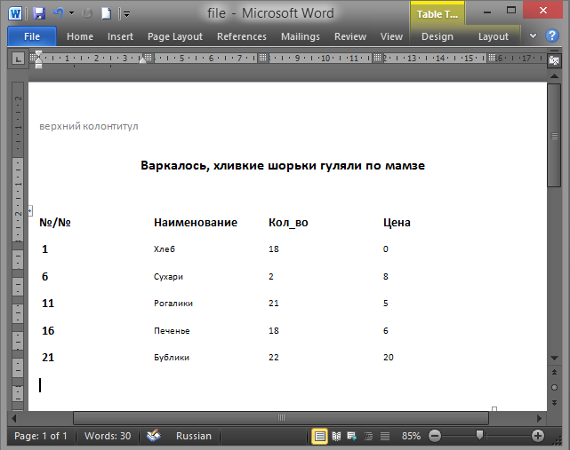

Автор: Алексей alexblack@yandex.ru
Программка предназначена для экспорта
списочных данных в Word из любой таблицы или запроса Accessa, позволяет
редактировать параметры страницы Worda, размер шрифта выводимых данных и
другие параметры форматирования, создает пожеланию столбец
автонумерации строк, причем можно указать с какого числа начать
нумерацию и потом сохранить данный вариант схемы отчета для будущего
использования.
Получим:


MSA-2000 ( 398 kB)